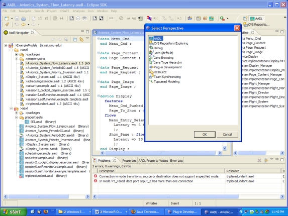
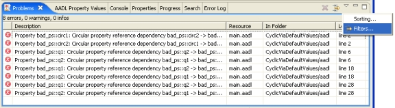
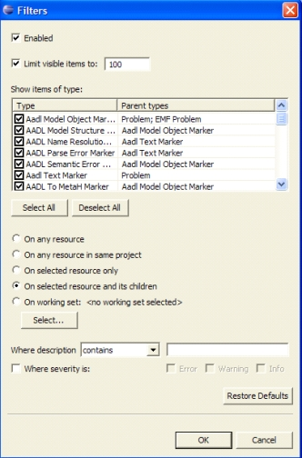

Previous
Next
Previous
Next 
| 4.1 Starting Up OSATE for the First Time |
OSATE is invoked by double clicking on the shortcut for the executable, or on the
“eclipse.exe” icon in the installation root folder.
When you start up Eclipse/OSATE for the first time you will be prompted to select a folder as
your workspace. By default this will be a folder called “workspace” in the installation root
folder of Eclipse/OSATE. You will want to change that to a folder you have created that is
separate from the installation root folder or any of its subfolders. This workspace folder can be
created anywhere on your hard disk with a name of your choice, e.g., “AadlProject1WS”. You
can use the convention of placing the workspace folders in a folder called “OSATE
Workspaces”. By keeping the workspace separate from the Eclipse installation root folder
area, you can delete the installation root folder for a clean re-installation without loosing your
workspaces/projects. Keeping the workspace separate also allows you to have the
workspace backed up without backing up the installation itself. For more on OSATE
workspaces see section 4.1.6.
After OSATE comes up you may see a welcome panel. If you close this panel you will see the
OSATE window divided into four areas; see Figure 3. The top left is used by the “Navigator”
or “Package Explorer”. You can create a new project through the “File” menu “New” ->
“Project..” and then select “Aadl Wizards” -> “Aadl Project”. This will create an AADL
specific project and open the Aadl perspective. You can also switch to the Aadl Perspective
through “Window”->”Open perspective”->”Other…”->”AADL”. For more details see
section 4.2.1
The AADL perspective uses the “Aadl Navigator” instead of the “Navigator”. This navigator
decorates files with errors and hides files starting with “.” (.settings and .project) and aaxl files
for which there are syntax errors in the corresponding AADL text file. The AADL perspective
also opens the Properties View, Problem View, and AADL Property Value View.
The AADL Navigator allows you the browse the OSATE workspace and open files (called
resources in Eclipse) by double clicking on them or by opening them through their context
menu. The top right area is used by editors when files in the Aadl Navigator are opened. If
multiple files are opened, their windows are shown in tabbed panels. An editor window can be
placed next to another editor window by dragging it on its tab. The bottom left is used by the
“Outline” view, a panel that shows an outline of the editor content. The bottom right is used to
show a number of views in tabbed window panels.

Figure 3: The Eclipse/OSATE main window, showing the "Aadl Navigator," "Outline," and "Problems"
views, along with two open editors and the "Show View" dialog box.
The following subsections describe useful Eclipse views that can be activated, if not already
visible, by going to the menu “Window > Show view”. Some of the views are found under
“Other…”.
| 4.1.1 The “Problems” View |
This view is opened by selecting “Window > Show View > Problems”. Figure 4 shows a
close-up of the view. This view is shows errors, warnings, and status information messages
that are attached to files through the Eclipse marker mechanism. OSATE uses these markers
to report syntax and semantic problems in AADL models as well as record results of executing
analysis plug-ins.
We have defined two AADL-specific root marker types as subclasses of Eclipse problem
markers: “AADL Text Marker” to report problems on textual AADL files, and the “AADL
Object Model Marker” to report problems on AADL model files in XML. The AADL parser,
semantic checker, and analyses define subtypes of these marker types. This allows the user to
select the analysis results they are interested in by changing the settings in the filter for the
Problem view.
Make sure these OSATE marker types, and those marker types for which they are parent
types, are enabled in the “Problems” view “Filter” dialog, which can be invoked as shown in
Figure 4. In the “Filter” dialog box, shown in Figure 5, make sure the two marker types are
checked. You may also want to select “On selected resource and its children.” This will show
those problem markers for the selected file, folder, or project and its children only.

Figure 4: A close-up of the "Problems" view also showing how to open the filters dialog box.

Figure 5: Checking AADL-related marker types in the "Show items of type" list in the "Problems" view
"Filters" dialog box
| 4.1.2 The “AADL Property Values” View |
This view is opened by selecting “Window > Show View > Other” and then selecting “AADL
> AADL Property values”. This view displays AADL property values for elements of your
AADL object model when viewing in the AADL Object Model editor. New in OSATE 1.1:
You can also edit the property associations of the model object using this view. You do so
through the context menu in the AADL Property Values pane.
| 4.1.3 The “Properties” View |
This view is opened by selecting “Window > Show View > Properties”, or by selecting
“Window > Show View > Other” and then selecting “Basic > Properties”. This view displays
and allows you to edit attributes and references of the elements of your AADL object model.
For more detail see “AADL Object Editor”.
| 4.1.4 The “Tasks” View |
This view is opened by selecting “Window > Show View > Tasks”, or by selecting “Window >
Show View > Other” and then selecting “Basic > Tasks”. This view maintains a list of tasks to
be done. The context menu of this view allows you to add and manage the status of tasks.
When developing OSATE plug-ins this view also displays a list of “to-do” tasks that are
recorded in the plug-in Java code as comments starting with the word “TODO”.
| 4.1.5 The “Aadl Navigator” View |
This view is opened by selecting “Window > Show View > Aadl Navigator”, or by selecting
“Window > Show View > Other” and then selecting “AADL > Aadl Navigator”. This view
shows the progress during an automatic build (see also section 4.6).
| 4.1.6 The “Progress” View |
This view is opened by selecting “Window > Show View > Progress”, or by selecting
“Window > Show View > Other” and then selecting “Basic > Progress”. This view shows the
progress during an automatic build (see also section 4.6).
| 4.1.7 The “Error log” View |
The SDK version of Osate/Eclipse offers a view for the error log. The error log is kept as
“.log” in the .metadata folder in your workspace and can be viewed through the file system.
The error log view allows you to view the error log within Osate/Eclipse. The error log
contains error messages about null pointer exceptions and other internal errors in Osate. This
information allows us to track down problems with the tool set.